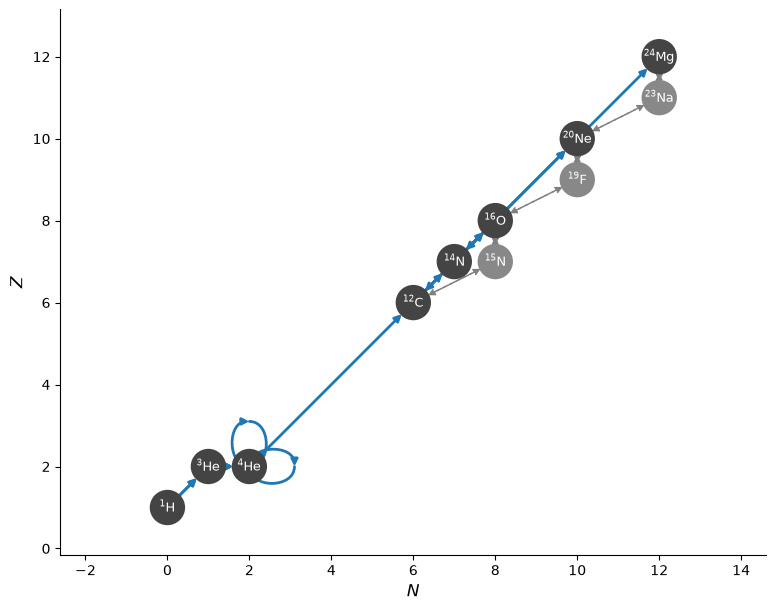
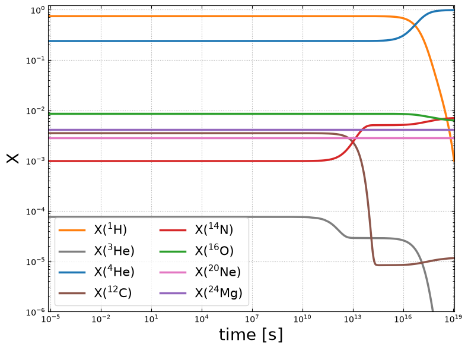
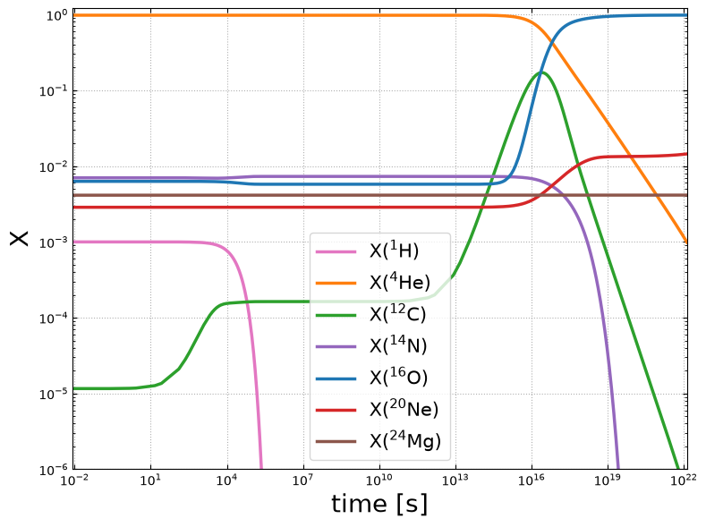

MESA basic.net Network#
The MESA stellar evolution code uses the basic.net network as a simple network for basic stellar evolution. basic.net use 8 nuclei to approximate pp, CNO (but not hot-CNO), and He burning. It also serves as the starting point for many other nets in MESA.
pynucastro can make a version of basic.net using ApproximateRate, BranchedRate, and ModifiedRate.
We will make three groups of approximations:
pp-chains : we’ll leave out deuterium and approximate pp-II and pp-III
CNO : we’ll approximate several rate sequences
helium burning : we’ll focus only on the most important rates
We will also not include reverse rates explicitly.
import pynucastro as pyna
rl = pyna.ReacLibLibrary()
pp rates#
We will make the following approximations:
\(d\) is not evolved, so the sequences \(p(p,e^+\nu)d(p,\gamma){}^{3}\mathrm{He}\) and it’s electron capture equivalent are treated as a single rate. We’ll use
ModifiedRatefor this.The pp-II and pp-III chains are also approximated, via the rate sequences:
\({}^4{\rm He}({}^3{\rm He},\gamma){}^7{\rm Be}(e^-,\nu){}^7{\rm Li}(p,\alpha){}^4{\rm He}\)
\({}^4{\rm He}({}^3{\rm He},\gamma){}^7{\rm Be}(p,\gamma){}^8{\rm B}(,e^+\nu){}^8{\rm B}(,\alpha){}^4{\rm He}\)
We could treat these as separate rates, using a
BranchedRateon \({}^7\mathrm{Be}\) (although currentlyBranchedRateassumes that the reactants are the same for the branched). However, since these two branches have the same endpoint, we could just use aModifiedRate. The only reason to treat them separately is if we want to account for the different neutrino energy loss in the two branches.Note
Currently, pynucastro does not have a data source for these neutino energies, so they will not be accounted for.
The remaining rates, \(^{3}{\rm He}(^{3}{\rm He},2p)^{4}{\rm He}\) and \({}^3{\rm He}(p,e^+\nu){}^4{\rm He}\) are just regular ReacLib rates.
Creating the rates#
First we’ll create the rates involved in \(p + p\). There are actually two rates here from ReacLib–an electron capture and a \(\beta^+\)-decay. We will approximate them both by changing the endpoint to be \({}^3\mathrm{He}\) so the net reaction is \(3~p \rightarrow {}^3\mathrm{He}\):
When we do get_rate_by_name with "p(p,)d", we get a list of rates, which we unpack here:
rpp, rpep = rl.get_rate_by_name("p(p,)d")
rpp, rpep
(p + p ⟶ H2 + e⁺ + 𝜈, p + p + e⁻ ⟶ H2 + 𝜈)
Now we create ModifiedRate from these, adding a proton and changing the endpoint.
Notice that we explicitly pass the rate_source from the underlying rates into the
ModifiedRate creation—this is important in this case, because it will help distinguish the \(e^-\)-capture from the \(\beta^+\)-decay:
rppp_he3 = pyna.ModifiedRate(rpp,
new_products=[pyna.Nucleus("he3")],
stoichiometry={pyna.Nucleus("p"): 3},
description="p(p,e⁺ν)d(p,γ)He3",
rate_source=rpp.src)
rpepp_he3 = pyna.ModifiedRate(rpep,
new_products=[pyna.Nucleus("he3")],
stoichiometry={pyna.Nucleus("p"): 3},
description="p(pe⁻,ν)d(p,γ)He3",
rate_source=rpep.src)
rppp_he3, rpepp_he3
(3 p ⟶ He3 + e⁺ + 𝜈, 3 p + e⁻ ⟶ He3 + 𝜈)
The \({}^3\mathrm{He} + {}^3\mathrm{He}\) and \({}^3\mathrm{He} + p\) rates are unapproximated.
rhe3he3 = rl.get_rate_by_name("he3(he3,pp)he4")
rhe3p = rl.get_rate_by_name("he3(p,)he4")
For the \({}^{3}\mathrm{He} + {}^{4}\mathrm{He}\) rate, we need to consume a proton, but that should not factor into how the rate’s \(dY/dt\) term is constructed. We use the not_in_ydot_term functionality described in Rate Sequences with Extra Reactants.
rhe3he4 = rl.get_rate_by_name("he4(he3,g)be7")
rhe3he4p_2he4 = pyna.ModifiedRate(rhe3he4,
new_reactants=[pyna.Nucleus("he4"),
pyna.Nucleus("he3"),
pyna.Nucleus("p")],
new_products=[pyna.Nucleus("he4"),
pyna.Nucleus("he4")],
not_in_ydot_term=[pyna.Nucleus("p")],
description="He4(He3,γ)Be7(e⁻,ν)Li7(p,α)He4")
We’ll create a library for the pp burning:
lib_pp = pyna.Library(rates=[rppp_he3, rpepp_he3,
rhe3he3, rhe3p, rhe3he4p_2he4])
CNO rates#
We will use the approximation from BranchedRate. This approximates the sequences:
\({}^{12}{\rm C}(p, \gamma){}^{13}{\rm N}(,e^+\nu){}^{13}{\rm C}(p,\gamma){}^{14}{\rm N}\)
\({}^{14}{\rm N}(p, \gamma){}^{15}{\rm O}(,e^+\nu){}^{15}{\rm N}(p,\alpha){}^{12}{\rm C}\)
\({}^{14}{\rm N}(p,\gamma){}^{15}{\rm O}(,e^+\nu){}^{15}{\rm N}(p,\gamma){}^{16}{\rm O}\)
\({}^{16}{\rm O}(p,\gamma){}^{17}{\rm F}(,e^+\nu){}^{17}{\rm O}(p,\alpha){}^{14}{\rm N}\)
using BranchedRate or ModifiedRate.
Important
This will not capture hot-CNO, since it does not consider the \(\beta\)-limiting from \({}^{14}\mathrm{O}\) and \({}^{15}\mathrm{O}\). This is consistent with MESA’s basic.net.
Creating the rates#
First we get the underlying rates for the CNO cycle
rc12pg = rl.get_rate_by_name("c12(p,g)n13")
rn14pg = rl.get_rate_by_name("n14(p,g)o15")
rn15pa = rl.get_rate_by_name("n15(p,a)c12")
rn15pg = rl.get_rate_by_name("n15(p,g)o16")
ro16pg = rl.get_rate_by_name("o16(p,g)f17")
Now we do the 4 rate approximations:
rc12_2p_n14 = pyna.ModifiedRate(rc12pg,
new_products=[pyna.Nucleus("n14")],
stoichiometry={pyna.Nucleus("p"): 2},
description="C12(p,γ)N13(,e⁺ν)C13(p,γ)N14")
rn14_2p_c12 = pyna.BranchedRate(rn14pg,
primary_branch=rn15pa,
other_branch=rn15pg,
stoichiometry={pyna.Nucleus("p"): 2},
description="N14(p,γ)O15(,e⁺ν)N15(p,α)C12")
rn14_2p_o16 = pyna.BranchedRate(rn14pg,
primary_branch=rn15pg,
other_branch=rn15pa,
stoichiometry={pyna.Nucleus("p"): 2},
description="N14(p,γ)O15(,e⁺ν)N15(p,γ)O16")
ro16_2p_n14_a = pyna.ModifiedRate(ro16pg,
new_products=[pyna.Nucleus("n14"),
pyna.Nucleus("he4")],
stoichiometry={pyna.Nucleus("p"): 2},
description="O16(p,γ)F17(,e⁺ν)O17(p,α)N14")
We’ll create a library for the CNO burning:
lib_cno = pyna.Library(rates=[rc12_2p_n14, rn14_2p_c12,
rn14_2p_o16, ro16_2p_n14_a])
He-burning#
We will do a simple He burning presciption:
We will include triple alpha
For \({}^{12}\mathrm{C}(\alpha,\gamma){}^{16}\mathrm{O}\), we also include the alternate \({}^{12}{\rm C}(\alpha,p){}^{15}{\rm N}(p,\gamma){}^{16}{\rm O}\) using
ApproximateRateWe include the “3/2-\(\alpha\) capture onto \({}^{14}\mathrm{N}\) discussed in Modified Rates.
Finally, we’ve add the \(\alpha\)-capture sequences:
\(^{16}{\rm O}(\alpha,\gamma)^{20}{\rm Ne}\) + \({}^{16}{\rm O}(\alpha,p){}^{19}{\rm F}(p,\gamma)^{20}{\rm Ne}\)
\(^{20}{\rm Ne}(\alpha,\gamma)^{24}{\rm Mg}\) + \(^{20}{\rm Ne}(\alpha,p){}^{23}{\rm Ne}(p,\gamma){}^{24}{\rm Mg}\)
using
ApproximateRate
Creating the rates#
r3a = rl.get_rate_by_name("a(aa,g)c12")
rc12ag, _ = pyna.rates.make_ap_pg_rates(rl, "c12", "o16",
use_detailed_balance=True)
rn14ag = rl.get_rate_by_name("n14(a,g)f18")
rn14ag_lite = pyna.ModifiedRate(rn14ag,
new_products=["ne20"],
stoichiometry={pyna.Nucleus("he4"): 1.5})
ro16ag, _ = pyna.rates.make_ap_pg_rates(rl, "o16", "ne20",
use_detailed_balance=True)
rne20ag, _ = pyna.rates.make_ap_pg_rates(rl, "ne20", "mg24",
use_detailed_balance=True)
Finally we will create a library:
lib_he = pyna.Library(rates=[r3a, rc12ag,
rn14ag_lite, ro16ag, rne20ag])
Constructing the network#
We will construct the network using the three libraries we just created.
Note
Even though we have two rates that look like \(3~p \rightarrow {}^3\mathrm{He}\), they are distinguishable by their weak rate type, and this will not raise a RateDuplicationError.
net = pyna.PythonNetwork(libraries=[lib_pp, lib_cno, lib_he])
net.summary()
Network summary
---------------
explicitly carried nuclei: 8
approximated-out nuclei: 3
inert nuclei (included in carried): 0
NSE compatible? False
total number of rates: 39
rates explicitly connecting nuclei: 14
hidden rates: 25
reaclib rates: 19
starlib rates: 0
temperature tabular rates: 0
weak tabular rates: 0
approximate rates: 3
derived rates: 9
branched rates: 2
modified rates: 6
custom rates: 0
fig = net.plot(always_show_p=True, node_size=550, node_font_size="9")

Integrating#
In a star, we will have H core burning, followed by contraction, and then He core burning. The thermodynamic conditions at these two stages will differ quite a bit. So we’ll test out this network by doing two burns (one after another).
First, H burning. We’ll choose conditions similar to the Sun
rho = 150
T = 1.5e7
comp = pyna.Composition(net.unique_nuclei, init="solar")
tmax = 1.e23
We will burn until H exhaustion.
sol = net.integrate_network(tmax, rho, T, comp,
stopping_condition=("h1", 1.e-3))
/opt/hostedtoolcache/Python/3.14.7/x64/lib/python3.14/site-packages/pynucastro/rates/derived_rate.py:125: UserWarning: C12 partition function is not supported by tables: set log_pf = 0.0 by default
warnings.warn(UserWarning(f'{nuc} partition function is not supported by tables: set log_pf = 0.0 by default'))
/opt/hostedtoolcache/Python/3.14.7/x64/lib/python3.14/site-packages/pynucastro/rates/derived_rate.py:125: UserWarning: N15 partition function is not supported by tables: set log_pf = 0.0 by default
warnings.warn(UserWarning(f'{nuc} partition function is not supported by tables: set log_pf = 0.0 by default'))
fig = sol.plot_evolution(ymin=1.e-6)
/opt/hostedtoolcache/Python/3.14.7/x64/lib/python3.14/site-packages/pynucastro/networks/python_network.py:496: UserWarning: Attempt to set non-positive xlim on a log-scaled axis will be ignored.
ax.set_xlim(tmin, tmax)

Now we’ll take this composition as the starting point for He burning, but use a higher density and temperature, corresponding to the Sun’s conditions on the horizontal branch
X_final = sol.X[:, -1]
comp.set_array(X_final)
T = 1.e8
rho = 20000
sol2 = net.integrate_network(tmax, rho, T, comp,
stopping_condition=("he4", 1.e-3))
fig = sol2.plot_evolution(ymin=1.e-6)
